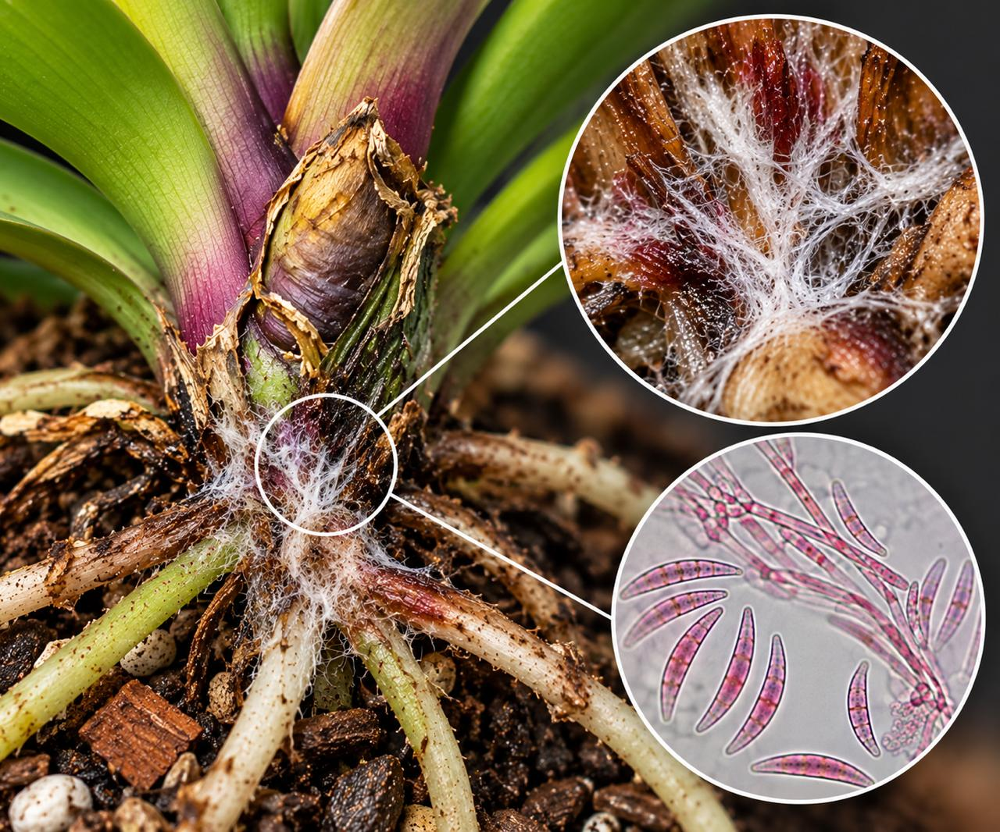
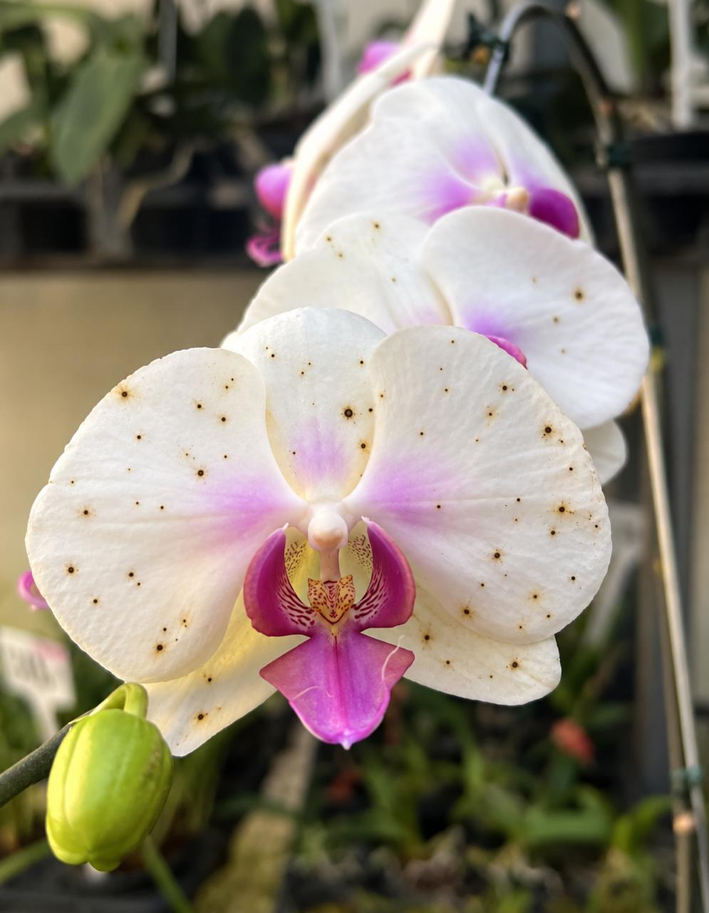
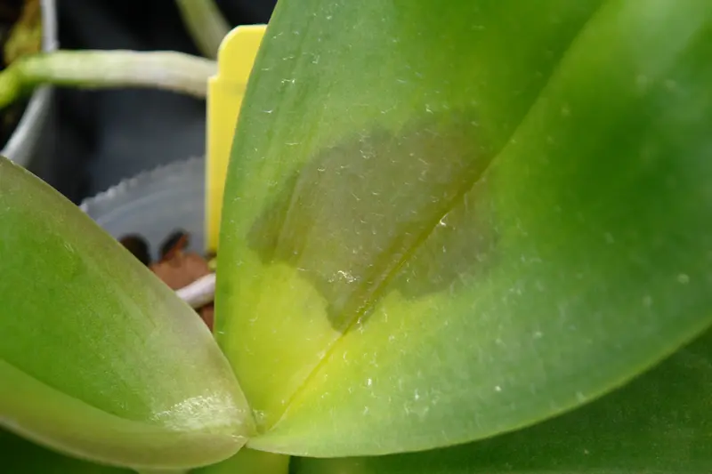
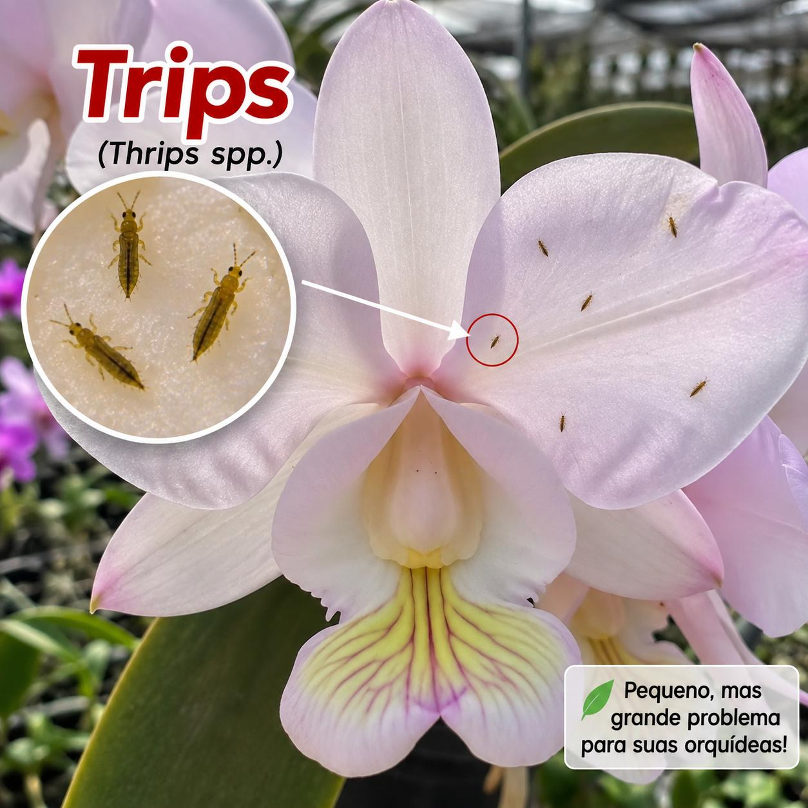

Manchas nas folhas
Pontos, áreas amareladas, marrons ou acinzentadas que avançam, mudam de cor ou se espalham para outras folhas.
Aprenda, de forma simples e prática, a reconhecer os principais sinais de infestação e doença, entender possíveis causas e tomar decisões de manejo com mais segurança — sem depender de tentativa e erro.
Cochonilhas • Tripes • Ácaros • Fungos • Podridões • Fusarium • Doenças bacterianas e outros problemas comuns do cultivo
Material educativo. Não há promessa de resultado: a resposta de cada planta varia conforme espécie, ambiente, histórico do cultivo e avaliação do caso.
Assista à apresentação antes de continuar.
Um ou mais destes sinais podem indicar que algo mudou no cultivo. O que você observa é um ponto de partida, não uma confirmação.
Pontos, áreas amareladas, marrons ou acinzentadas que avançam, mudam de cor ou se espalham para outras folhas.

Crostas fixas que não se descolam, insetos miúdos, moscas pequenas ou teias finas em folhas, hastes e flores.
Folhas enrugadas, enroladas, com pontas tortas ou crescimento alterado, mesmo com o cuidado aparentemente regular.

Raízes marrons, escuras ou moles, com perda da firmeza esperada e da coloração clara típica de raízes sadias.

Pétalas ou labelos com pontos, bordas necrosadas, deformação ou flores que não abrem por completo.

Tecido aquoso, macio, translúcido ou com odor, muitas vezes associado a umidade alta, ventilação reduzida e temperaturas elevadas.
Material educativo. As imagens ilustram situações comuns e não permitem identificar a causa de um caso específico. A confirmação de pragas e doenças exige avaliação técnica.
Na maioria dos casos, a dificuldade não está em falta de cuidado, e sim em observar pouco ou interpretar um sinal sem considerar o contexto do cultivo.
Rega, adubação, luz e ventilação fazem parte da rotina. A orquídea floresce e nada parece errado.
Umidade alta, ventilação reduzida, substrato que seca de forma desigual ou excesso de irrigação tendem a favorecer o aparecimento de problemas.
Manchas discretas, pontos pequenos, folhas enrugadas ou raízes escurecidas podem estar em partes que normalmente não são observadas com calma.
Uma mancha pode estar relacionada a umidade, luz, nutrição, irrigação ou a um patógeno. Um sinal isolado não define um diagnóstico, e agir cedo demais costuma gerar mais alterações do que solução.
Mudanças frequentes de substrato, produtos e receitas testadas na internet reduzem a chance de entender o que está causando o problema, porque mais de uma intervenção acontece ao mesmo tempo.
Quando você registra o que viu, onde viu e o que mudou no ambiente, fica mais fácil considerar opções de prevenção e manejo e conversar com um profissional sobre o caso.
Estas são algumas pragas e doenças frequentes em orquídeas. Use este material como orientação educativa e confirme casos, quando necessário, com avaliação técnica.

A Diaspis boisduvalii é uma das pragas mais citadas em orquídeas. Essa escala se fixa em folhas, pseudobulbos e rizomas, alimentando-se de seiva e podendo enfraquecer a planta gradualmente.

Os tripes podem causar deformações e danos relevantes em orquídeas. Eles se alimentam do tecido e, em algumas condições, podem atuar como vetores de viroses. A identificação precisa ser confirmada.

O Tetranychus urticae pode ser difícil de observar a olho nu. Alimenta-se perfurando células e absorvendo o conteúdo; o tempo de desenvolvimento varia conforme a temperatura, a umidade e a espécie.
O Botrytis cinerea é um dos fungos mais citados em orquidários. Causa o "mofo cinza", que aparece principalmente nas flores, como pequenas manchas castanhas ou cinzas que se expandem e produzem uma pelagem acinzentada de esporos.
O Fusarium oxysporum pode comprometer a condução de água e causar amarelecimento progressivo. A evolução varia e os sinais isolados não confirmam o diagnóstico.
Causada por bactérias como Erwinia e Pectobacterium, a podridão mole pode evoluir rapidamente em condições de alta umidade e temperatura. A causa deve ser confirmada por avaliação técnica.

As Sciaridae são pequenas moscas cujas larvas se alimentam de fungos e raízes jovens no substrato. A presença delas costuma indicar substrato muito úmido ou em decomposição.

Conhecida como vaquinha-verde, a Diabrotica speciosa é um besouro polífago que ataca orquídeas, frutas, hortaliças e plantas ornamentais. Os adultos alimentam-se das folhas, flores e brotações, enquanto as larvas atacam as raízes.
Rone Cândido Lacerda
O treinamento organiza o raciocínio em etapas, para que cada decisão de manejo considere o que foi observado e não apenas o sintoma mais visível.
Aprender a olhar a planta com calma e a registrar o que está visível: cor, textura, formato e evolução dos sinais ao longo dos dias.
Entender que a mesma praga pode estar em partes diferentes da planta — folhas, raízes, bainhas de pseudobulbos, substrato ou flores.
Comparar sinais parecidos entre si, como manchas de origens distintas, e reconhecer quando o inseto observado é amigo do cultivo.
Considerar o conjunto do cultivo — substrato, irrigação, luz, umidade, ventilação e histórico — antes de escolher uma conduta de manejo.
Conhecer opções de prevenção e manejo que podem ser avaliadas para o seu caso, sempre dentro do rótulo, da legislação e da orientação técnica.
Atenção: este raciocínio organiza a observação, mas não substitui diagnóstico profissional. Nenhum sinal isolado define, sozinho, a causa do problema.
Alguns insetos participam do equilíbrio do orquidário e podem auxiliar no monitoramento de pragas. A contribuição de cada um varia conforme o ambiente e a pressão de pragas.

Joaninhas podem ajudar no monitoramento de cochonilhas, pulgões e ácaros. A contribuição e o desempenho variam conforme o ambiente e a pressão de pragas.

Conhecida como "leão-da-folha", a larva da crisopa é um predador de pequenos insetos. Ataca pulgões, cochonilhas, ácaros, tripes e ovos de lagartas. Os adultos se alimentam de néctar e pólen.

Percevejos predadores podem auxiliar no monitoramento de tripes, ácaros e afídeos. A eficiência depende do ambiente e da identificação correta.

Esse ácaro predador pode contribuir para o monitoramento de ácaros-aranha em orquídeas. A resposta varia conforme as condições do cultivo.

Vespas parasitoides podem ser utilizadas em programas de manejo biológico conforme a espécie, a praga e as condições do cultivo. A eficiência varia de caso para caso.

A louva-a-deus é um predador generalista que pode capturar pequenos insetos. A presença e o efeito no cultivo dependem do ambiente e do equilíbrio ecológico.
Importante: esses insetos podem fazer parte do equilíbrio do orquidário. O uso de produtos deve seguir o rótulo, a legislação e a avaliação técnica. Nenhuma estratégia garante a ausência de pragas.
Três capacidades que o treinamento procura construir ao longo dos módulos, sempre como apoio à observação e à decisão.
Saber nomear o que você está vendo é o primeiro passo. O conteúdo apresenta os grupos mais comuns do cultivo de orquídeas e os sinais que costumam acompanhá-los.
Distinguir manchas de origens diferentes, fungos que participam do equilíbrio do substrato de fungos associados a doença, e insetos-praga de insetos aliados.
Entender o que pode ser avaliado para cada situação, com critérios de segurança, rótulo e legislação, sem que o conteúdo substitua a avaliação de um profissional.
Cada módulo aborda um grupo de pragas, doenças ou condições de cultivo, com linguagem acessível e exemplos observáveis.
Identificação dos principais insetos-praga que atacam orquídeas: cochonilhas, tripes, ácaros, pulgões e moscas.
Fungos que participam do equilíbrio do substrato e fungos associados a doenças: como diferenciar os dois grupos.
Aliados naturais como joaninhas, crisopas e vespas parasitoides, e como podem auxiliar no monitoramento de pragas.
Principais pragas aladas, sugadoras e rasgadoras: ciclo biológico e sinais de infestação.
Como o equilíbrio do orquidário influencia a ocorrência de pragas ao longo do tempo.
Técnicas preventivas e de manejo: monitoramento, controle biológico e controle químico.
Critérios para avaliar produtos, dosagens, rótulos e segurança, seguindo a legislação aplicável.
Proteção contra gatos, aves, roedores e outros animais que danificam o cultivo.
Insetos vetores de doenças bacterianas como Erwinia e Pectobacterium: como observar e o que fazer diante de suspeita.
Aprofundamento em controle biológico: como atrair, manter e multiplicar aliados.
Como luz, umidade, ventilação e temperatura influenciam a presença de pragas.
Antracnose, manchas foliares e necrose: como avaliar cada tipo de alteração fúngica.
Tripses, ácaros-aranha, ácaros-planos e mosca-do-substrato: identificação rápida.
Tipos (escala, farinácea, australiana), ciclo biológico e opções de prevenção e manejo.
Doenças fúngicas que podem exigir avaliação: sintomas, prevenção e opções de manejo.
Estratégias práticas para atrair e reter insetos benéficos no seu orquidário.
Uma aula do treinamento, para você conferir a forma como os temas são explicados antes de decidir.
Conteúdo educativo. Esta aula é uma amostra do material e não representa um resultado esperado para o seu cultivo.
Todo o material do curso, organizado em módulos e pensado para você consultar sempre que precisar identificar um sinal na sua orquídea.
R$ 97,00 Parcelas, formas de pagamento e condições são confirmadas no checkout.
QUERO ACESSAR O TREINAMENTOPagamento seguro pela Hotmart · 7 dias de garantia
Uma descrição objetiva do que está incluído na compra e das condições que valem para o acesso.
Insetos-praga, fungos, doenças bacterianas, doenças foliares, animais que danificam o cultivo e fatores de ambiente. Cada módulo organiza sinais observáveis e critérios para avaliar o manejo.
Material de apoio sobre o cultivo de orquídeas para consulta ao lado dos módulos, conforme as condições de entrega apresentadas na plataforma.
O acesso previsto é de 1 ano, conforme as condições do checkout e da plataforma. A liberação acontece após a confirmação do pagamento, conforme o fluxo da plataforma de venda.
Tudo isso por R$ 97
Condições importantes: o conteúdo é educativo e não substitui a avaliação de um profissional habilitado. A escolha e a aplicação de qualquer produto devem seguir o rótulo, a dosagem indicada e a legislação vigente.
R$ 97,00
Condições, parcelas e formas de pagamento são confirmadas no checkout, na plataforma da Hotmart. Nenhuma cobrança é feita fora dessa plataforma.
QUERO ACESSAR O TREINAMENTOPagamento seguro pela Hotmart · 7 dias de garantia
Se o conteúdo não fizer sentido para você, é possível solicitar o reembolso dentro do prazo de garantia, conforme os termos da Hotmart e a legislação aplicável. A garantia trata do acesso ao treinamento e não depende de a planta atingir um determinado resultado.
Respostas diretas sobre o que o treinamento é, para quem é e o que está incluído.
Sim. O conteúdo foi organizado para quem cultiva orquídeas, desde iniciantes até quem já tem prática. Os módulos seguem uma ordem que vai dos sinais mais comuns às causas mais difíceis de diferenciar.
Não. Os temas apresentados — identificação de pragas e doenças, fungos, condições de cultivo e monitoramento — podem ser estudados em qualquer escala, de uma planta em casa a um cultivo maior. Para casos específicos, procure avaliação técnica.
Não. Além dos insetos — cochonilhas, tripes, ácaros, moscas do substrato e besouros — há módulos sobre fungos (Botrytis, Fusarium, manchas foliares), doenças bacterianas, animais que danificam o cultivo e fatores de ambiente.
Sim. Existem módulos dedicados a fungos nas orquídeas, fungos foliares, Fusarium e fitoptose, além de doenças bacterianas e de medidas preventivas ligadas ao ambiente de cultivo.
O acesso previsto é de 1 ano, conforme as condições do checkout e da plataforma. Como as condições podem ser atualizadas, confira a descrição apresentada antes de finalizar a compra.
Depois da confirmação do pagamento, o acesso é liberado conforme o fluxo da plataforma de venda. O prazo de liberação pode variar e a confirmação chega pelos dados informados no checkout.
Se você procura uma resposta pronta e automática para cada planta, este conteúdo educativo pode não ser a melhor opção.
O conteúdo foi organizado para pessoas que cultivam orquídeas, desde iniciantes até quem já tem experiência. Ele é educativo e não substitui a avaliação de um profissional para casos específicos.
Não. Além dos fungos — Botrytis, Fusarium, manchas foliares e outros — o conteúdo aborda insetos-praga (cochonilhas, ácaros, tripes, moscas do substrato e besouros), doenças bacterianas e fatores de ambiente que influenciam o cultivo.
Após a confirmação do pagamento, o acesso é liberado conforme o fluxo da plataforma. O prazo de liberação pode variar.
O acesso previsto é de 1 ano, conforme as condições do checkout e da plataforma. Consulte as condições antes de finalizar a compra.
Você pode solicitar o reembolso dentro do prazo de garantia de 7 dias, conforme os termos da Hotmart e a legislação aplicável. A garantia não depende de um resultado específico na planta.
O tempo de resposta varia conforme a praga ou doença, a espécie, o ambiente e a gravidade do caso. O treinamento não define prazo de resposta. Procure orientação técnica sempre que houver dúvida.
Os princípios podem servir como ponto de partida para diferentes orquídeas, mas a abordagem deve ser ajustada à espécie, ao ambiente e ao caso. A confirmação de pragas e doenças pode exigir avaliação especializada.
O treinamento apresenta opções de prevenção e manejo que podem ser avaliadas para o seu caso. A escolha de qualquer produto deve considerar o diagnóstico, a espécie, o rótulo, a segurança e a legislação aplicável.
Confira o conteúdo, avalie se ele combina com a sua necessidade e consulte as condições antes de decidir.
VER CONDIÇÕES DA OFERTA →Preço vigente: R$ 97,00 · Condições no checkout · 7 dias de garantia